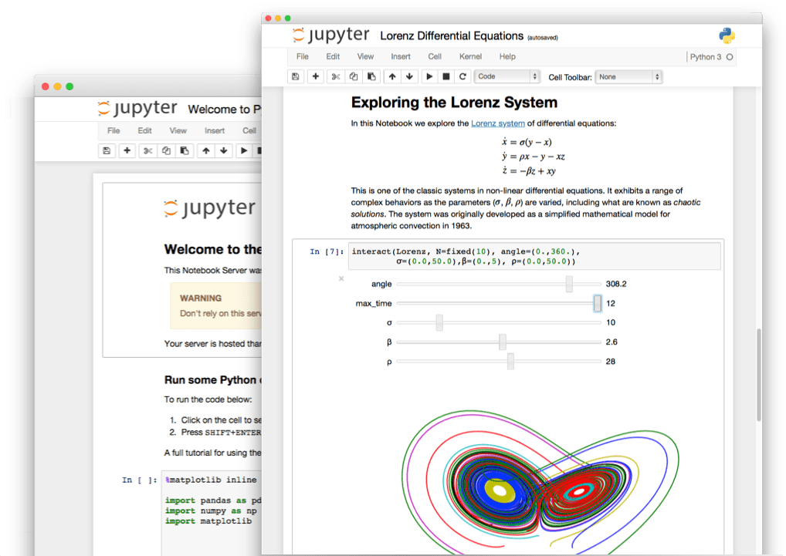

Aun cuando Google proporciona una herramienta sólida para el desarrollo de software para dispositivos android (SDK), ésta está orientada a Java, y cuando todo lo que queremos hacer es un script sencillo para automatizar tareas o procesos en android, o incluso para el desarrollo rápido y ágil de aplicaciones, el uso de Java puede ser tedioso con el diseño de programación tradicional de editar-compilar-ejecutar.
Para estos casos el uso de un lenguaje programación interpretado puede acelerar el desarrollo de aplicaciones, y es aquí donde el proyecto del Scripting Layer 4 Android, o SL4A, se vuelve una herramienta útil para escribir código para dispositivos móviles con android y en lenguajes diferentes a Java y hacerlo de una forma interactiva.
Al momento de preparar este curso el SL4A soporta Beanshell, JRuby, Lua, Perl, PHP, Python y Rhino. El curso está enfocado en el uso de Python por su flexibilidad, sencillez y soporte a través de una gran comunidad de múltiples disciplinas que contribuyen a su desarrollo. Además de ser software libre, Python es uno de los principales lenguajes utilizados en la naciente disciplina de la Ciencia de Datos.
- Conocer el proceso de instalación y configuración del ecosistema de Jupyter en su computadora personal
- Configurar los sistemas para establecer una comunicación interactiva entre Jupyter y Android
- Configurar una aplicación de Jupyter en la nube para ejecutarse en un entorno local
Qué haremos
Vamos a instalar y configurar las herramientas necesarias para contar con un ambiente de desarrollo flexible y ágil para desarrollar prototipos de aplicaciones móviles usando el lenguaje de programación Python Al final de la semana habrán:
| 
|

What you'll learn
- Cómo instalar y configurar Jupyter en una computadora personal
- Cómo instalar y configurar Python en un dispositivo móvil
- Cómo configurar el sistema para conectarse al dispositivo móvil
- Cómo interactuar con el dispositivo móvil usando Python
- Una computadora personal con un sistema operativo funcional
- Una dispositivo móvil con Android >= 4
- Un cable USB de transferencia de datos
- Acceso al repositorio del curso en Github
- Anaconda Python
- Scripting Layer 4 Android
- Python for Android
- Google Collaborative
Cada semana se compone de una serie de laboratorios que deben seguir para poder configurar el sistema de trabajo. Cada laboratorio contiene una serie de pasos con instrucciones que deberán seguir y completar. Algunos de los pasos los llevarán a sitios externos (en el internet o en su computadora local).
Los laboratorios que contienen las actividades de esta semana son:
- Instalación local de Jupyter vía Anaconda
- Instalación/configuración local de
adb - Instalación y configuración local del módulo
android.py - Configuración del ecosistema de Jupyter en la nube
- Instalación de Python en el dispositivo móvil
- Comunicación entre el dispositivo móvil y el sistema local
La descripción detallada de entrega se encuentra al final de cada laboratorio.